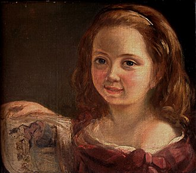

Ada Lovelace née Ada Byron, est la fille du poète britannique Lord Byron et d’Annabella Milbanke fervente adepte de mathématiques.
Cette dernière n’hésite pas à offrir un enseignement scientifique à sa fille pour l’éloigner de la poésie et des rêveries de son père.
Or, à cette époque, il est inhabituel qu’une jeune fille de la noblesse puisse accéder à une telle formation.
On considérait que les femmes ne pouvaient pas déployer l’énergie mentale et physique requise par le travail scientifique.

L’éducation d’Ada a été marquée par l’excellence, avec des mentors tels que Mary Somerville, la première femme à être acceptée à la Royal Astronomical Society.
À l’âge de 17 ans, Ada Lovelace fait la rencontre de Charles Babbage, mathématicien reconnu considéré aujourd’hui comme le père des ordinateurs modernes.
Elle est vite captivée par sa machine à différences (l’une des premières calculatrices).
Par le biais d’une correspondance soutenue, elle découvre le projet le plus ambitieux de Charles Babbage : la machine analytique soit le premier ordinateur moderne.
En octobre 1842, un jeune mathématicien italien, Federico Luigi Menebrea, publie un article qui décrit le fonctionnement de la machine analytique de Babbage. Ada Lovelace le traduit et y ajoute des notes détaillées.
Dans l’une d’elles, elle publie le premier algorithme pouvant être exécuté par une machine et crée un programme permettant de calculer les nombres de Bernouilli, une suite de nombres complexes se calculant par récurrence.
Afin de financer la construction de la machine, elle s’adonne au jeu misant sur ses compétences en calcul des probabilités. Mais elle s’endette rapidement.
Ni Babbage ni Ada ne purent voir de leur vivant la machine analytique en fonction.
Le souvenir d’Ada se poursuit encore aujourd’hui grâce au langage de programmation nommé ADA,
conçu d’abord pour le département de la Défense des États-Unis et utilisé jusqu’à nos jours dans plusieurs technologies modernes : l’automobile, les transports ferroviaires et les technologies aéronautiques.